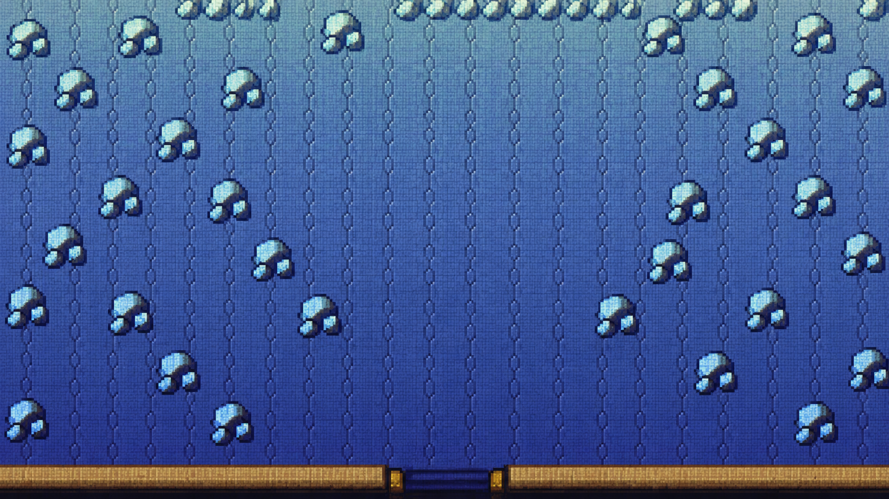

RAYQUAZA BOSS ARENA · REFERENCE STUDY
天空之柱 · 顶层战斗地图
基于《宝可梦 绿宝石》顶部房间
先对齐原作的空间语言
这是场景方向预览：室内蓝石砖、重复的浅色石块纹样、南侧棕金门槛；中间刻意留出宽阔走位区。

天空之柱 · 顶层
裂空座出现
原作画面参考：绿宝石天空之柱顶层实机记录 · 天空之柱资料切换右上按钮，可比较纯场地和角色尺度
这是场景方向预览：室内蓝石砖、重复的浅色石块纹样、南侧棕金门槛；中间刻意留出宽阔走位区。
